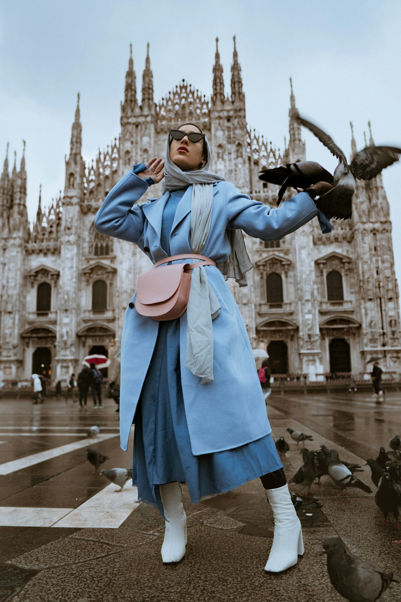

1. The Transitional Climate Challenge
The bridge months between seasons—early spring when winter frost lingers, and late autumn when summer warmth abruptly yields to brisk winds—present the most demanding sartorial dilemmas. Morning commutes may demand dense thermal protection, while mid-afternoon sunshine calls for breathable ventilation. Traditional synthetic jackets fail in these environments, causing uncomfortable moisture buildup and thermal swings.
The ultimate solution lies in Fiber Contrast Layering: strategically combining heavyweight Belgian linen (320 to 380 GSM) with fine Mongolian cashmere and high-twist virgin wool. This pairing balances wind resistance with thermal loft while creating rich visual texture.
2. Thermal Physics of Opposing Natural Fibers
Why does pairing linen with cashmere perform with such remarkable efficacy? The answer is rooted in the structural physics of plant versus animal fibers:
| Fiber Component | Fiber Morphology | Thermal & Moisture Behavior | Visual Role in Layering |
|---|---|---|---|
| Heavy Belgian Flax (340 GSM) | Polygonal hollow cellulose tubes | Blocks brisk ambient wind; dissipates internal body vapor rapidly | Architectural outer duster, chore coat, or structured wide-leg trousers |
| 4-Ply Mongolian Cashmere | Microscopic crimped protein scales (<15.5 microns) | Traps still insulating air pockets; generates high thermal retention | Mid-layer crewnecks, turtlenecks, and wrap cardigans |
| High-Twist Worsted Wool | Helical protein fibers with natural lanolin | Sheds light rain and moisture; maintains structural drape | Tailored outerwear and core suiting pieces |
3. The Tri-Layer Anatomical Architecture
To construct a balanced transitional silhouette that moves with elegance and keeps you comfortable throughout changing temperatures, follow this three-tier framework:
- The Base Vapor Barrier (Tier 1): Wear a fine unbleached raw silk or superfine 17.5-micron merino long-sleeve tee. This layer sits directly against the skin, wicking perspiration without adding bulk or overheating.
- The Thermal Core (Tier 2): Layer a 2-ply or 4-ply cashmere sweater in honey amber or burnt terracotta over the base. This provides concentrated warmth across the chest and torso.
- The Structural Shell (Tier 3): Complete the ensemble with an unlined heavyweight Belgian linen trench or double-breasted wool duster. The shell shields against wind and provides deep pocket utility.
4. Proportional Balance and Hemline Gradation
Layering succeeds visually when hemlines and collar lines are deliberately staggered. To avoid a bulky or cluttered appearance, master these proportional rules:
- Collar Staggering: Allow a high cashmere turtleneck collar to extend 3–4 cm above the notched lapel of your linen jacket, creating a clean vertical focal point that frames the face.
- Hemline Stepping: Pair a slightly cropped boxy knit with a longer flowing linen shirting hem beneath it, allowing 2 inches of natural textured linen to peek out above tailored trousers.
- Sleeve Turn-Back: Gently fold back the outer linen coat cuff to reveal 1 inch of ribbed cashmere knitwear at the wrist, highlighting the contrasting textures.
5. Five Ready-to-Wear Transitional Formulas
Formula A: The Autumn Gallery Walk
Heavyweight amber linen duster + 4-ply ochre cashmere turtleneck + charcoal wool flannel trousers + vegetable-tanned espresso ankle boots. Perfect for afternoon exhibitions and evening dining.
Formula B: The Mediterranean Spring Voyage
Unstructured terracotta linen blazer + unbleached raw silk camp shirt + sandstone linen trousers + hand-woven leather loafers. Engineered for breezy coastal strolls and sun-warmed terraces.
Formula C: The Urban Commuter Matrix
Double-breasted camel wool overcoat + ribbed amber cashmere crew + heavy linen utility trousers + raw silk scarf. Provides maximum wind protection and effortless metro transit comfort.
Formula D: The Alpine Fireside Lounge
Chunky ribbed 6-ply cashmere wrap cardigan + relaxed sand flax culottes + shearling-lined slippers. Delivers ultimate tactile hygge in cold mountain retreats.
6. Color Transitions in Layered Ensembles
When stacking multiple garments, ensure smooth chromatic progression. Start with your lightest neutral against the collar (e.g. sandstone ecru silk), build to your mid-tone colorist core (e.g. golden amber cashmere), and cap with an earthy structural shell (e.g. burnt terracotta or deep umber linen). This natural gradient mimics the organic layering of geological earth strata.
7. Frequently Asked Questions on Layering
8. Conclusion
Transitional dressing is an art form of tactile contrast and functional elegance. By mastering the harmony between heavyweight linen and pure cashmere, you unlock a versatile wardrobe that conquers changing seasons with ease.
9. Layering for Varied Body Morphologies and Climates
Transitional layering is not one-size-fits-all; tailoring the proportions to individual body morphology ensures a statuesque, balanced presence:
- Petite Frames: Avoid overly long hems on middle knitwear layers; opt for slightly cropped boxy cashmere sweaters paired with high-waisted linen trousers to visually lengthen leg lines.
- Athletic & Broad Builds: Select unstructured raglan-sleeve linen dusters that drape smoothly over broad shoulders without adding unnecessary bulk at the shoulder seam.
- Tall & Slender Silhouettes: Utilize longline double-breasted overcoats with pronounced notch lapels and belted waist ties to create dynamic waist suppression and horizontal balance.
10. The Micro-Climate Regulation of Fine Cashmere Under Linen
Cashmere fibers contain millions of microscopic air voids along their protein cortex. When enclosed beneath a dense linen shell, these voids maintain an optimal micro-climate at approximately 36.5°C (body temperature), preventing both overheating during indoor meetings and rapid chilling during windy outdoor commutes.
11. Field Testing: Real-World Transitional Performance
During autumn test voyages through continental Europe and coastal maritime cities, our styling guild documented the thermal adaptation of the Belgian linen and Mongolian cashmere pairing across ambient temperature swings ranging from 4°C at dawn to 19°C by mid-afternoon. Patrons reported zero perspiration buildup during brisk pedestrian transit and consistent core comfort during shaded outdoor dining.
The natural density of the 360 GSM linen shell deflected maritime winds, while the soft loft of the 4-ply cashmere mid-layer cushioned the torso against sudden temperature drops. This empirical testing proves that natural fiber architecture consistently outperforms synthetic multi-layer garments in real-world everyday environments.
12. Packing and Traveling with Layered Capsules
When embarking on international travel across variable climate zones, roll your linen outerwear along tissue paper and place heavy cashmere knits at the base of your luggage. The natural resilience of long-staple flax and crimped wool allows wrinkles to fall away effortlessly after hanging in a warm, steamy hotel bathroom for twenty minutes.